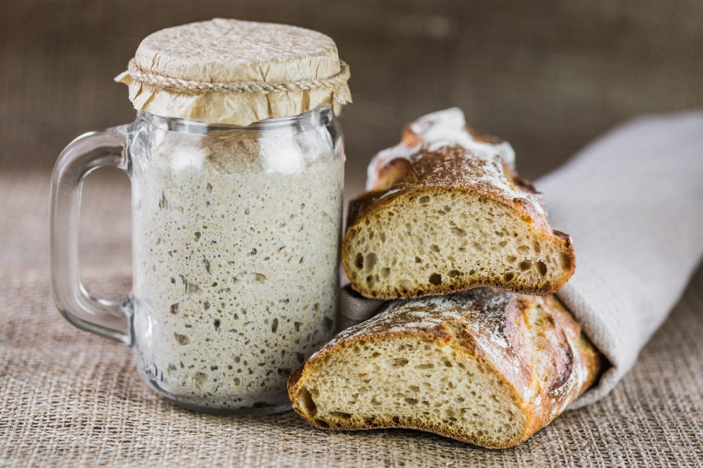
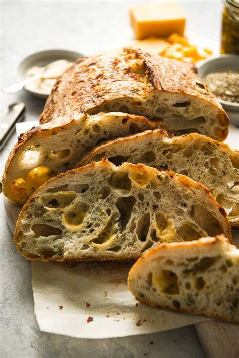
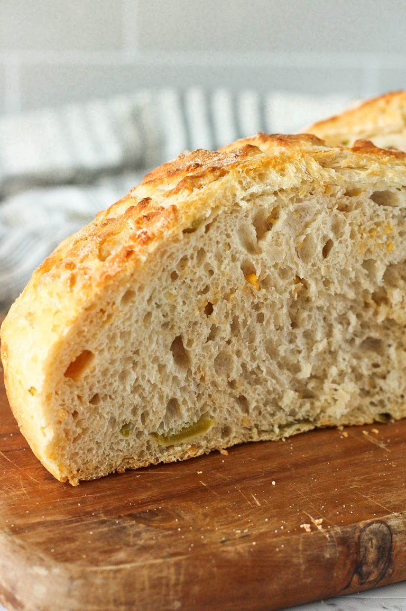

Discover the Benefits of Homemade Organic Sourdough
Our sourdough is made with love, using the best organic ingredients to bring you wholesome bread that’s healthy and delicious.
Benefit 1: Easier to Digest
Sourdough's slow fermentation process breaks down gluten and carbohydrates, making it easier to digest. The beneficial bacteria in sourdough help pre-digest complex carbs, making it a better choice for those with gluten sensitivity or digestive issues.

Benefit 2: Low Glycemic Index
With a low glycemic index, sourdough releases energy slowly, preventing blood sugar spikes. Its fermentation process reduces simple sugars, making it a better option for those managing blood sugar levels.
Benefit 3: Rich in Nutrients
Sourdough made from organic, whole grains provides B vitamins, fiber, and essential minerals. The fermentation process makes these nutrients more bioavailable, so your body can absorb them more easily.
Benefit 4: Gut Health
The probiotics found in sourdough help to support a healthy gut microbiome, improving digestion and contributing to better overall health.

Benefit 5: Better Nutrient Absorption
Phytates in grains can bind to minerals, making them harder to absorb. The long fermentation process reduces phytate levels, making minerals like iron and zinc more bioavailable to your body.

Benefit 6: Heart Health
Sourdough made from whole grains contains fiber and beneficial fats, such as omega-3s, which are shown to improve heart health and reduce inflammation.